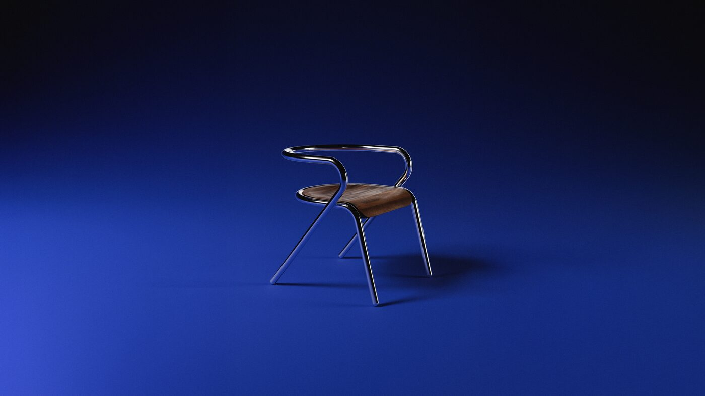

In a Shanghai studio overlooking Xintiandi’s lantern-lit streets, Susan Fang’s latest collection began not with sketches but with questions. How does air itself move? Can we print it? What happens when a ribbon — that most ancient of textile techniques — meets the precision of 3D machinery? For her Fall/Winter 2026 “Air-Infinity” presentation, Fang answered by creating pieces that seemed to defy material logic: jackets that breathed like silk, armour that floated like clouds, silhouettes that moved between structure and weightlessness.
Susan Fang has spent the last five years perfecting what critics have come to call her “air-weaving” technique — a process of interlocking ribbon strands to create three-dimensional forms that read as both solid and permeable. It is a labour-intensive method, one that demands an almost meditative relationship with the loom. But this season, Fang pushed beyond the purely textile-based explorations. Working with engineers and digital fabrication specialists, she developed a hybrid approach: traditional hand-woven ribbon elements paired with 3D-printed structural components in a resin that mimics the opacity and weight of pleated silk.
Armour as protection and poetry
The breakthrough pieces were undoubtedly the printed-and-woven hybrid jackets that opened the show. Structured shoulder pieces — printed in graduating opacity from opaque cream to near-transparent — suggested samurai armour reimagined through a contemporary lens. But rather than rigidity, they offered something more complex: protection that doesn’t constrain, architecture that moves with the body. Beneath these printed elements, Fang’s signature ribbon construction created cascading layered effects, the woven sections catching light differently at each angle.
Evening wear pushed the concept further. A series of gowns featured explosive silhouettes built from meter upon meter of gossamer ribbons, their density increasing toward the hem before exploding outward in what Fang described as “unbounded fabric.” Paired with barely-there printed vests that suggested cage-like structures without the weight, the overall effect was of women armoured in air, protected by precision.
Fang understands something that most contemporary designers have forgotten: that limitation breeds genius. By constraining herself to ribbon and geometric printing, she has opened infinite possibilities.
Margaux DelacroixShanghai’s moment of becoming
The collection’s timing could not have been more significant. Shanghai Fashion Week is experiencing a renaissance, with international press and buyers finally paying sustained attention to what Chinese designers have been building for years. This season saw Feng Chen Wang celebrating its tenth anniversary with a career retrospective. Shushu/Tong unveiled their most ambitious collection to date. Labelhood’s presentation space was packed with editors from Milan, Paris and New York, all searching for the next narrative.
Fang’s show, presented within Design Shanghai 2026, arrived at precisely the moment when the conversation shifted from “emerging Chinese designers” to “designers from Shanghai changing global fashion.” Her work speaks to something deeper than novelty. It represents a mature design practice that has earned its innovations through years of devoted, obsessive craft.

Detail of Susan Fang’s Air-Infinity collection, showcasing the interaction between printed and hand-woven elements
Scaling the infinite
What distinguishes Fang’s Air-Infinity collection from pure technical experimentation is her unwavering commitment to wearability. Yes, the pieces are labour-intensive. Yes, they represent a considerable investment. But they are, fundamentally, clothes designed for bodies. The silhouettes remain grounded in a modern sensibility: strong shoulders, defined waists, lengths that acknowledge contemporary proportions. A woman can move in these pieces. She can breathe. The technology enhances rather than overwhelms the human form.
This philosophy — that innovation should serve elegance rather than replace it — has become increasingly rare. In an industry obsessed with technological novelty for its own sake, Fang’s restraint feels radical. She uses 3D printing not because it is trendy, but because it solves a specific structural problem. She employs her ribbon technique not for spectacle, but because no other method achieves the particular transparency and weight she envisions.
By collection’s end, it became clear that Susan Fang has created not merely a season of clothes but a statement about where luxury fashion might be heading — not toward the further digitization of the body, but toward the marriage of ancient craft with contemporary precision. Shanghai is now undeniably where this conversation is happening. And Susan Fang is leading it forward, one ribbon at a time.